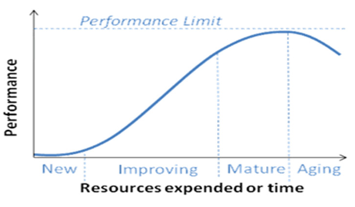
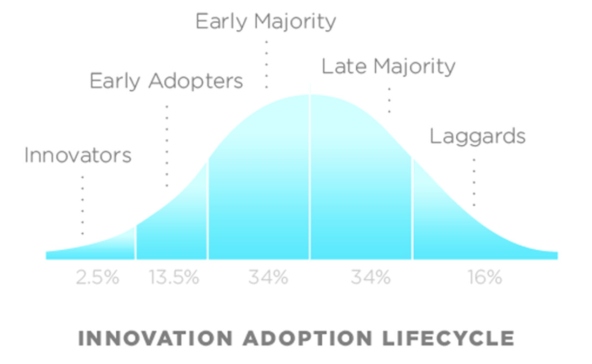

People adopt technologies at different rates. There are early adopters who are enthusiastic about anything new. Then there are those who adopt the new technology as it becomes more mature, mainstream, and affordable. Finally, there are those who adopt because the old technology becomes obsolete. Christina Haas in her article "On the Relationship Between Old and New Technologies" argues that the relationship between old and new technology is complex and nuanced (1). The transition from transparencies to HTML presentations occurred in two phases which illustrate this complexity. The first phase was the creation of the PowerPoint software program. The second phase of the transition was the develpment of frameworks for creating presentations using HTML. Maturity of the technology, and any supporting technology, played key roles in the complexity of the transition. This presentation will describe the two phases and discuss how maturity of technology influenced the trajectory of presentation media.
Christina Haas’ view of transition of technology from old to new stresses that the transition is not a direct replacement (1). One of the reasons for this could be that people adopt new technologies at different rates. Maturity of the technology influences peoples enthusiasm for adopting it. Two curves shown below illustrate this point – the S-curve shows maturation of technology and the adoption bell curve represents when different groups of people adopt technology (2). When superimposed (not shown) the two curves illustrate how most people adopt the technology when it is more mature.
 Rajesh Kumar provides another definition of mature technology that relates maturity to how transparent it is (3). To him, transparency means that we use the technology without thinking about the how and why of its working. One example he uses is that of radio communication. During the 1890’s this was novel and astonishing. Today, we use it in cell phones, GPS, remote control (of TV’s and cars), and WiFi. The University’s wireless internet access would not exist without it, yet we don’t often think about the basis for how these work. As the technology becomes even more mature, we don’t even think of it as "technology" anymore – books and other printed media for example.
Usability also needs to be part of the definition of maturity and is implicit in transparency. If a technology is so difficult to use that only a few individuals within a select group are using it, it is not transparent and is still in the improving stage of development.
The difficulties of preparing presentations using old media drove the development of PowerPoint.
In the 1870's, Jules Duboscq developed the overhead projector, then called a viewgraph (image on the left) (4)(5). David E. Hansen patented the 35mm slide carousel in May of 1965 (image on the right)(6)(7). Prior to PowerPoint, these were the instruments people used to show information in presentations. Overhead projectors use clear plastic transparencies as the media that contained the information. These are the size of an 8X10 inch piece of paper. The carousels used 35mm slides. Preparing these media for presentations was a tedious, costly, and time-consuming process. The process required giving a sketch to a secretary, or for those lucky enough to have the resources, to a person with specialized skills in creating the media. The individual then translated the sketch into a slide or overhead by typing it, photocopying it, and finally giving it to the presenters for modifications, corrections, and comments. The presenter then returned it for further work. This was an iterative process that continued until the presenters were satisfied or until they actually had to give the presentation (8).
At this time, presenters had little control over their presentations. To work around this problem, Robert Gaskins created a system that the presenters could use to make their own transparencies. His description of the system captures the exigence for software to make overheads:
This system was so cumbersome to use that it almost amounted to an unplanned laboratory experiment in how painful you could make a presentation system and still have the lab animals clamor to use it.
The early history of PowerPoint illustrates the importance of a supporting technology's maturity in development of new technology. Robert Gaskins wrote his first concept of PowerPoint in 1984 (9). At this time, the graphical user interface for the Macintosh was more mature (presumably easier to use) so the first version of PowerPoint was designed for the Macintosh (10). The "get info" screen for the first PowerPoint is shown above. Gaskins and his team never envisioned PowerPoint replacing transparencies and 35mm slides. Rather, they designed PowerPoint to fulfill the presenters' desire to make their own slides, notes, and handouts.
This version of PowerPoint took full advantage of all that the Macintosh and its accessories offered. By today's standards, they did not offer much, but being able to design and create their own presentations was still a tremendous advantage to presenters. The technology for projecting directly from a computer to a screen did not exist yet, so the media for the PowerPoint output was shaped by the technology that was available. Only black and white (or green) monitors and printers were available (note the black and white "get info" screen and the black and white desktop), so PowerPoint 1.0 produced black and white slides that could be printed on black and white printers. The second version of PowerPoint offered color because monitors were now capable of it. This gave presenters the option to make color 35mm slides. The third version of PowerPoint was capable of video content, and the presentation could now be projected using laptops and video projectors(10).
Even when technology to project directly from PowerPoint existed, not everyone adopted it with wholehearted enthusiasm. Cost was probably one reason for this. Now, laptops and PowerPoint are inexpensive enough that nearly everyone can afford them, but at the time the technology became available, much of the hardware and software required was still too expensive for individual use. Also, the money required to install video projectors in every conference room may have been prohibitive for some institutions. Another fact contributing to the slow adoption by some users was that it was not necessary to have PowerPoint to make overheads for presentations. Laser printers, inkjet printers, word processors, and drawing programs were becoming more affordable and would allow most people to make the overhead transparencies that they needed for presentations. These presentations obviously did not have the fancy animations and layouts that PowerPoint provided, and they did not have the handouts and other parts of a presentation in the same software package, but they were functional. However, there are certainly advantages to PowerPoint. Having all the slides correctly ordered in PowerPoint on a laptop is one because transparencies can be easily lost or mixed up in use and transport. However, from a teacher/student standpoint, transparencies have their advantages. For one, they slow the presentation which could be an advantage to students. It is also possible to write on and erase a transparency so they can be reused and written on in real time. This can be an advantage if the screen blocks the whiteboard or if the instructor is guiding students through a process.
Now that PowerPoint is deeply ingrained in our culture, there has been some criticism of its use. Some of these criticisms have been put forward by Edward Tufte. He discusses how PowerPoint limits the amount of data that can be included on a PowerPoint slide. He believes this limits a user’s ability to do rigorous analysis and give intelligent technical presentations (11).
The Neilsen/Norman group wrote an excellent essay refuting Tufte's points (12). They do not believe that PowerPoint is to blame. Rather, the speaking and design skills of the presenter are weak. Tufte would argue that this is a result of the limitations inherent in the slide templates, and there may be truth to this statement. However, the design of the templates was based on presentations Robert Gaskins observed in an international tour where he found that the design of presentation slides was universal. He took this tour at a time before PowerPoint, and given the amount of effort involved in creating these slides, the presenters would probably not have used such designs if they were not effective.
Technology has matured and become less expensive, and few conference rooms continue to have overhead projectors, so PowerPoint or a PowerPoint alternative is now almost essential.
People seek alternatives to PowerPoint for a variety of reasons. Seeking alternatives can be related to cost, a need for online collaboration, or just a desire not to contribute to the Microsoft monopoly. For reasons of cost and a desire not to use Microsoft products, there are offline alternatives - Impress in the LibreOffice suite is one (13). Impress in Apache's OpenOffice is another (14). These two are based on the same source code, but LibreOffice forked from OpenOffice. LibreOffice is getting more developer attention, so it has more new features. However, OpenOffice has better compatibility with Microsoft's products. Even so, there are glitches in the translation. These are both fairly mature technologies, in that they are easy to use, but the limited use of PowerPoint by most professionals prevents widespread use of these alternatives. (Images from Wikimedia Commons)
HTML is the language that creates all the pages on the internet. It is possible to create alternatives to Powerpoint using HTML. For those who want online collaboration, web-based access, or access to their presentations at all times, there are many online frameworks for web-based presentations. These can be simple or complex. One simple one created in 2001: JavaScript slides(15). More complex ones include Reveal.js, Fathom.js, and Impress.js and can be found in a search for PowerPoint alternatives. Impress.js is particularly interesting – the slides seem to be scattered on one large canvas and using the arrow keys allows navigation between the slides. Comments about Reveal.js illustrate Haas's assertion that technology evolution is not a linear direct replacement model. One reviewer claimed that an advantage of HTML frameworks is that they do not use a WYSIWYG interface (16). However, the developers of PowerPoint considered this interface one of its essential features, and the WYSIWG interface seems like it is a hallmark of mature computer software. For many, possibly most, potential users of Reveal.js the loss of the WYSIWYG interface would not be an advantage.
A presentation framework may not have been the best media for conveying this information. It brings to mind the limitations of presentation media (specifically PowerPoint) discussed by Tufte. The style of the pages was based on what is needed for slide presentations, which is understandable since that is the framework's purpose. However, some modifications were necessary to make it useful for this presentation. The font size is large, (as is appropriate for presentations) but it is not possible to fit enough text on a slide to cover the information adequately without audio supplementation. Therefore adding scroll bars to the slides was necessary. The ordered list for the references would not initially go above 9, which would make sense for a presentation because long lists don't make sense in slide presentations.
HTML frameworks are at the end of a trajectory of presentation media that started with overhead transparencies, transitioned through PowerPoint, and ends with web based media. A program like PowerPoint was very helpful and necessary at the time. Maturity of supporting software technology (the Macintosh OS) was a key factor in the initial development of PowerPoint. Maturity of supporting hardware technology was key in the evolution of PowerPoint into a program that can be used for making presentations projected onto a screen from a laptop as we see today. PowerPoint is now very mature and is a well established feature in presentations seen today. HTML technology is not very mature from a usability perspective, since the majority will find it difficult to use. Since most people are comfortable with PowerPoint, HTML frameworks may not become mainstream for some time.
My sincere gratitude to Hakim El Hattab and all the developers who created and improved Reveal.js.
Many thanks to Chris Lindgren who had the courage to teach WRIT4662w for the first time and who directed me to resources for this project.